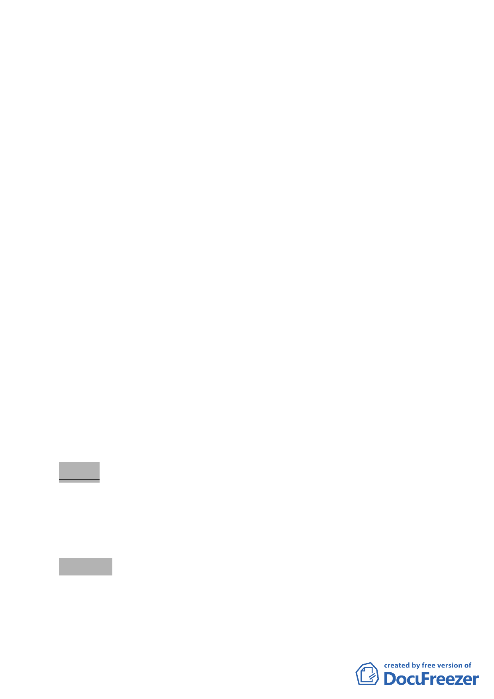

案情概要說明：
一、本更新單元位於中正區羅斯福路三段 240 巷 7 弄、羅斯福路三
段、羅斯福路三段 240 巷所圍之街廓西北側，面積 1016 平方
公尺，土地使用分區為商三特(原屬及商二)。
二、更新單元內計有 4 棟加強磚造建築物，其中 3 棟私有建物為
4-5 層樓、1 棟 1 層公有土地建物，屋齡皆逾 30 年，土地權屬
69.98%為私有、30.02%為公有。目前同意參與更新比例之土
地及合法建築物所有權人約達 12%以上。本案基地建物老
舊，多數無設置防火間隔，有礙消防安全與都市防救災，且巷
弄停車空間不足、缺乏安全舒適人行步道等空間。更新計畫實
施後，可促進土地再開發利用、強化防救災機能與生活安全、
提供優質開放空間、人行動線空間，創造良好都市環境品質。
三、本件係市府以 98 年 1 月 8 日府都新字第 09731276700 號函送
到會。
四、申請單位：李郁齡 君。
五、辦理單位：臺北市政府。
六、法令依據：都市計畫法第 66 條、都市更新條例第 5、6、8、
11 條暨臺北市都市更新條例第 15 條。
七、本更新單元劃定業經市府審查符合更新單元劃定基準。
決 議：
一、本案更新單元劃定範圍照案通過。
二、計畫書第 6、11 頁所提開放空間之構想，建議考量基地西北側
及西側開放空間之形塑。
肆、散會（17 時 00 分）。
- 21 -